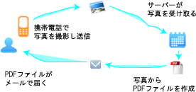

写メモ
「写メモ」は携帯電話で撮った写真をPDFファイルへ変換し、
ご指定のメールアドレスに送信するWebサービスです。
会議中のホワイトボードや雑誌の切り抜き、手書きメモ、お料理のレシピなど、
ちょっとメモしたい時使うと便利です。
FOMA 700/800/900iシリーズ以降の携帯電話で動作いたします。
本サービスは無料にてご利用いただけます。

※携帯電話の通信料は無料ではありません。
FOMAの機種によっては動作しない場合もあります。
写メモのご利用にはパケット定額制サービスへのご加入を推奨いたします。
ご利用方法
下記にPC用のメールアドレスを入力し、送信ボタンをクリックします。
入力されたメールアドレスにQRコードを記載したメールが届きますので、
携帯電話からQRコードにてアクセスし、iアプリをダウンロードしてください。
※メールアドレスはサーバに保存しません。
安心してご利用ください。
操作方法

決定キーでタイトルを入力できます。
上下キーにて写真サイズを変更できます。
左右キーにて画像を選択するか、撮影するかを変更できます。
ソフトキーにて操作を決定するか、キャンセルできます。
写真は送信後、PDFファイルが作成され指定したメールアドレスに届きます。
連絡事項
09.07.08 Ver 0.1 をリリースしました。